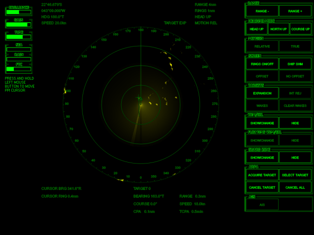

|
|
Green-screen generic radar |
|  | Features :
|
|
|
The radar simulates a computer-based radar controlled by a computer mouse (trackball). All functions are implemented by mouse clicks on
corresponding buttons on the display. Current radar modes are designated by indicators located at the top of display, like "RANGE", "HEAD UP" or TARGET EXP". To implement a function which requires specification of a position on PPI, like to acquire a target (i.e. mark the target), use the two steps : (1) mouse-click at this position to move PPI cursor (green cross) to this place (2) click the corresponding function button on the right-hand panel. The BRILLIANCE, GAIN, TUNE and other sliders are used to specify a corresponding value : move mouse cursor over the slider and drag the left mouse button over the slider to change the value. |
||
| Function | How to implement | |
| heading mode | click [HEAD UP] or [NORTH UP] | |
| changing range | use [RANGE+] and [RANGE-] buttons. Current range value is displayed at an upper line of the screen | |
| range rings | use [RINGS ON/OFF] to hide/show | |
| heading line (hide temporarily) | click [HIDE SHM]; the line stays hidden while the button is pressed | |
| target expansion (echo stretch) | is used to enlarge radar echoes from point objects; press [EXPANSION] to turn this function on/off | |
| VRM/EBL |
press VRM/EBL [SHOW/CHANGE] button; an electronic bearing line
and variable range marker appears; a small circle marks a node moveable by the mouse;
drag it with the left mouse button pressed to provide
the marker with a desirable range and bearing; press [SHOW/CHANGE] again to complete. Click [HIDE] to hide the marker |
|
| guard zones (alarm not yet working) |
are sectored zones around the ship used to issue alarms when a
target comes in or out; press GUARD ZONE [SHOW/CHANGE] button; a guard zone appears; drag a small circle
at the upper right corner of the zone with the left mouse button pressed to provide
the zone with a desirable shape; press [SHOW/CHANGE] to complete. Click [HIDE] to hide the guard zone |
|
| ARPA - Automatic Radar Plotting Aid |
is used to predict positions of targets and estimate risk of
collision by calculating CPA (Closest Point of Approach) -
minimum distance to a target and TCPA (time to this moment) provided
the target and own ship will move with the same constant speeds
and headings. Place PPI cursor over a target and then press ARPA [ACQUIRE TARGET] to harness a target. Safe targets are marked by circles, dangerous targets are marked by triangles. Speed vector length equals to the distance the marked ship will cover in 3 minutes. Select a target to display its numerical parameters by placing the PPI cursor over an acquired target and click [SELECT TARGET] button. The parameters of the selected target are shown at lower lines of the display. Exclude a target from monitoring by placing the PPI cursor over the target and click [CANCEL TARGET]. Clear all by [CANCEL ALL]. |
|
| display current own ship position, speed and course | this information is provided by a GPS connected to the radar. This information is displayed at the upper left corner of the display | |
| brilliance | place mouse cursor over the BRILLIANCE slide bar, click and hold the left mouse button, drag the cursor left-right to specify a desired value | |
| gain adjustment | place mouse cursor over the GAIN slide bar, click and hold the left mouse button, drag the cursor left-right to specify a desired value | |
| tuning the magnetron | place mouse cursor over the TUNE slide bar, click and hold the left mouse button, drag the cursor left-right to specify a desired value | |
| suppress sea clutter | place mouse cursor over the SEA slide bar, click and hold the left mouse button, drag the cursor left-right to specify a desired value of suppression | |
| suppress rain clutter | place mouse cursor over the RAIN slide bar, click and hold the left mouse button, drag the cursor left-right to specify a desired value of suppression | |
| change FTC (fast time constant) | is used to suppress rain clutter far from the ship; place mouse cursor over the FTC slide bar, click and hold the left mouse button, drag the cursor left-right to specify a desired value of suppression | |